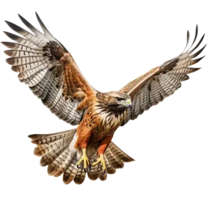

Şahin
🦅 Şahin eksilirse:Yılanlar avcı kaybettiği için artar
Yılanlar artınca kurbağa azalır
Kurbağa azalınca çekirge artar
Çekirge artarsa bitkiler azalır

Yılan
🐍 Yılan eksilirse:Kurbağalar artar
Kurbağa artınca → çekirgeler azalır
Çekirge azalınca bitki artabilir
Şahinler aç kalır → şahin azalır

Kurbağa
🐸 Kurbağa eksilirse:Yılanlar yiyecek bulamaz → azalır
Şahinler dolaylı olarak aç kalır → azalır
Çekirgeler avlanmadığı için çoğalır → artar
Çekirgeler çoğalınca → bitkiler azalır

Çekirge
🦗 Çekirge eksilirse:Kurbağalar ana besinini kaybeder → azalır
Yılanlar kurbağa bulamaz → azalır
Şahinler de yine aç kalır → azalır
Bitkilere baskı azalır → çoğalabilir

Bitki
🌿 Bitki eksilirse:Çekirgeler aç kalır → sayıları azalır
Kurbağalar yemek bulamaz → ve azalır
Yılanlar kurbağa bulamaz → azalır
Şahinler yılan avlayamaz → azalır